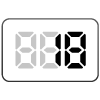

【018】アロー関数を使った計算結果をコンソールに表示

- プロンプト例
JavaScriptで関数を使った完全未経験者向けの問題を５問作成して
- アロー関数の事例
- 出力は、consoleに
アロー関数を使うときのポイント
書き方の基本
基本形
const 関数名 = (引数) => { 処理 }; 関数名();
例
const greet = () => { console.log("こんにちは"); };
👉 ポイント
- function は使わない
- => が最大の特徴（アロー = 矢印）
引数がない場合
const hello = () => { console.log(`Hello`); };
👉 () は必ず必要
引数が1つだけのとき
const double = num => { console.log(num * 2); };
👉 () は省略OK
初心者のうちは
(num)
と書く方が安全 👍
理が1行だけなら {} を省略できる
const add = (a, b) => console.log(a + b);
👉 でも 初心者は省略しない方が理解しやすい！
return を使う場合
const add = (a, b) => { return a + b; }; console.log(add(3, 5)); // 8
👉 return = 結果を返す
よくあるミス TOP3
❌ ① => を忘れる
const test = () { console.log("NG"); };
⭕ 正解
const test = () => { console.log(`OK`); };
❌ ② () を忘れる
const hello = => { console.log(`NG`); };
⭕ 正解
const hello = () => { console.log(`OK`); };
❌ ③ 実行し忘れる
const greet = () => { console.log(`こんにちは`); };
⭕ 実行する
greet();
アロー関数を使う練習問題
問題1：あいさつを表示する関数
「こんにちは！」と表示するアロー関数を作って、実行してください。
条件
- 関数名：greet
- 出力：こんにちは！
問題2：2つの数を足す関数
2つの数を受け取って、足し算の結果を表示するアロー関数を作ってください。
条件
- 関数名：add
- 引数：a, b
- 出力例：add(3, 5) → 8
問題3：名前を使って自己紹介
名前を受け取って「私の名前は〇〇です」と表示する関数を作ってください。
条件
- 関数名：introduce
- 引数：name
- 出力例：introduce("太郎") → 私の名前は太郎です
問題4：正方形の面積を求める
一辺の長さを受け取り、正方形の面積を表示してください。
条件
- 関数名：squareArea
- 引数：side
- 出力例：squareArea(4) → 16
問題5：偶数かどうか判定する
数値を受け取り、偶数なら「偶数です」、奇数なら「奇数です」と表示してください。
条件
- 関数名：checkEven
- 引数：num
- 出力例：
- checkEven(10) → 偶数です
- checkEven(7) → 奇数です
✅ 解答例
問題1：あいさつを表示する関数
const greet = () => { console.log(`こんにちは！`); }; greet();
問題2：2つの数を足す関数
const add = (a, b) => { console.log(a + b); }; add(3, 5);
問題3：名前を使って自己紹介
const introduce = (name) => { console.log(`私の名前は ${name} です`); }; introduce(`太郎`);
問題4：正方形の面積を求める
const squareArea = (side) => { console.log(side * side); }; squareArea(4);
問題5：偶数かどうか判定する
const checkEven = (num) => { if (num % 2 === 0) { console.log(`偶数です`); } else { console.log(`奇数です`); } }; checkEven(10); checkEven(7);